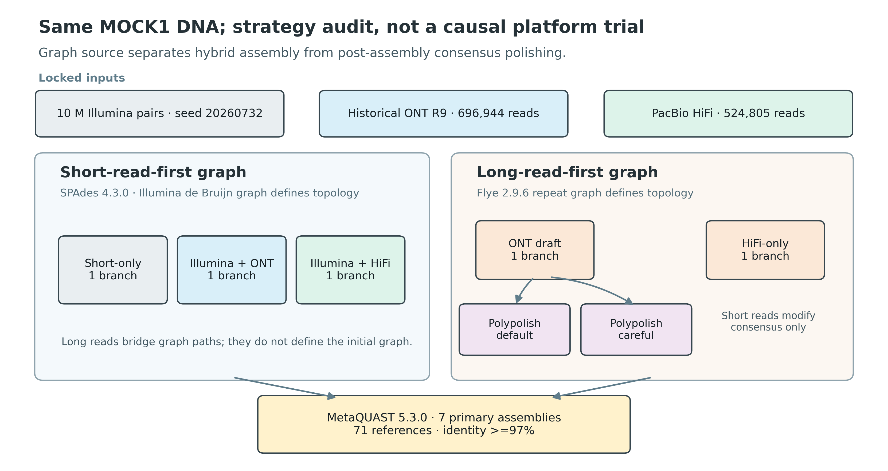
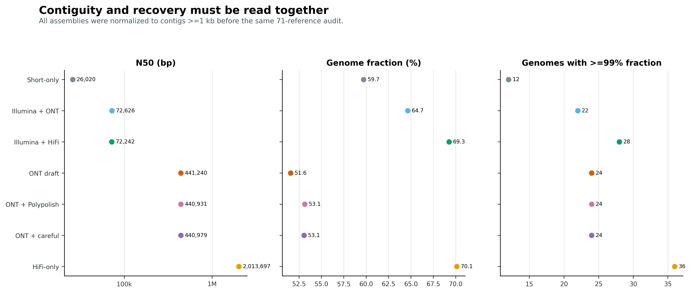
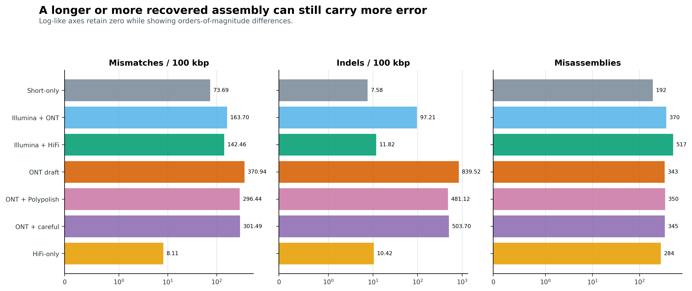
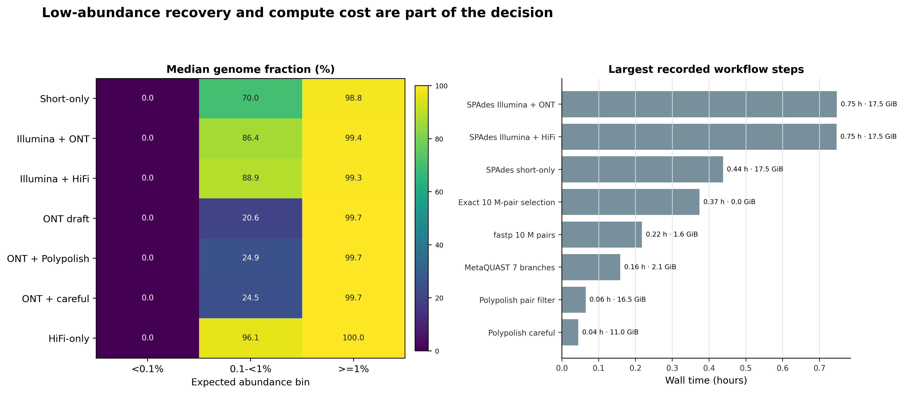

options(timeout = 600)
base_url <- "https://raw.githubusercontent.com/petemeng/metagenomics-best-practices/e219a2cd01609cc208a89e291cbd363ed7f2fbd8/"
files <- read.delim(paste0(base_url, "examples/32/files.tsv"))
for (i in seq_len(nrow(files))) {
path <- files$path[i]
dir.create(dirname(path), recursive = TRUE, showWarnings = FALSE)
if (!file.exists(path)) {
download.file(paste0(base_url, files$source[i]), path, mode = "wb")
}
}Hybrid assembly 与 polishing：何时混合，何时直接 HiFi
学习目标：区分 short-read-first hybrid assembly（短读优先混合组装）与 long-read-first polishing（长读优先后抛光）；能把 ONT/HiFi 作为 SPAdes supplementary reads，也能用
BWA-MEM -a+ Polypolish 审计长读 draft；最终同时用 recovery、contiguity、mismatch、indel、misassembly、低丰度回收和资源账本作决策。
真实数据：Meslier 等的 71-strain 不均一 MOCK1 DNA，项目PRJEB52977、样本SAMEA14435832。IlluminaERR9765746固定抽取 10,000,000 对 reads；完整历史 ONT R9ERR9765780含 696,944 reads，完整 PacBio CCS/HiFiERR9765783含 524,805 reads (Meslier 等 2022年)。
结论边界：同一份 DNA 没有把平台 yield、read length、chemistry、basecaller 与误差模型配平。这里比较的是锁定输入与参数下的 assembly strategy，不是平台单因素实验。>=99% genome fraction是预先定义的操作性回收阈值，不是“无误差闭环基因组”的证明。
提示纠错改善局部碱基，不一定修复结构错误
在同一输入范围内比较纠错前后的一致性错误和结构错误；不要只以 N50 决定是否接受结果。
短读纠错能否改善长读组装？
锚定结果是 Meslier 等的 Table 3 与 Supplementary Table S2。原研究在 MOCK1 上固定 10 million Illumina read pairs，用 SPAdes 3.14.1 的 --nanopore 或 --pacbio 建立 short-read-first hybrid assembly；ONT-only 与 HiFi-only 则使用 metaFlye 2.8.1。所有分支再由 MetaQUAST 4.6.3 对已知 mock references 评价 (Meslier 等 2022年)。
| Published MOCK1 branch | Contigs | N50 (bp) | Genome fraction (%) | Mismatches / 100 kbp | Indels / 100 kbp | Full genomes (>=99%) |
|---|---|---|---|---|---|---|
| Illumina-only | 40,147 | 13,707 | 61.897 | 47.55 | 3.53 | 12 |
| Illumina + ONT | 16,923 | 77,301 | 66.357 | 192.42 | 98.36 | 22 |
| ONT-only | 1,283 | 759,940 | 44.955 | 339.99 | 764.45 | 22 |
| Illumina + HiFi | 12,932 | 85,671 | 70.630 | 129.90 | 7.95 | 27 |
| HiFi-only | 437 | 2,013,697 | 68.197 | 18.30 | 11.76 | 36 |
原表已经推翻了“hybrid 必然最好”这个简化结论：Illumina + ONT 的 N50、genome fraction 与完整基因组数都高于 Illumina-only，但 mismatch 与 indel 同时升高；HiFi-only 回收 36 个完整基因组，高于 Illumina + HiFi 的 27 个。连续性、回收率和碱基准确性不是同一个指标。
当前审计把工具升级为 SPAdes 4.3.0 与 MetaQUAST 5.3.0，同时增加一个独立问题：先用完整历史 ONT R9 组装，再用同一 Illumina 子集做 Polypolish 0.6.1，结果究竟是修正 consensus，还是在 strain-rich metagenome 的保守区引入新错误。七条分支统一过滤到 >=1 kb 后进入同一个 71-reference、identity >=97% 的评价合同。
MetaQUAST 5.3.0 的 reference alignment 实际调用随 QUAST 源包提供的 minimap2 2.28-r1209；环境中另装的 standalone minimap2 2.31 不参与这张主表。报告版本时要把二者分开，避免只看 PATH 里的 minimap2 --version 就误记评价引擎。

重要先说清楚 hybrid 的方向
“同时有短读和长读”不足以描述方法。必须写清 assembly graph 由谁建立：SPAdes hybrid 是短读图优先、长读辅助跨越；Flye + Polypolish 是长读图优先、短读只修 consensus。二者对 strain collapse、重复区、结构连接和小变异的风险不同。
纠错改善局部碱基，不一定修复结构错误
polishing 使用回比证据修改共识序列，不能被视为所有组装错误的通用修复。近缘成员混合时，支持某个碱基的 reads 还可能来自不同来源；因此局部 mismatch 降低与整体结构正确性需要分别评价。N50 没变也不代表没有改善，N50 增加更不代表错误减少。
本例七个策略应在相同真值范围内比较回收与错误，并保留输入预算。达到 99% genome fraction 只是操作性回收指标，不等于无错误闭环。选择是否接受纠错结果，应看目标分析是否受相关错误影响，并保留原始与纠错后版本，而不是覆盖掉无法回查的草稿。
下载本例数据与分析代码
数据与代码清单列出了本例的输入表、分析脚本和环境文件（约 528.1 MiB）。本清单不含原始 FASTQ 或大型数据库；是否需要它们取决于下文的分析起点。清单中的已计算结果仅供核对；读取结果表不等于重新运行统计模型或上游工具。
在新建文件夹中运行下面的 R 代码，下载完成后即可按正文中的相对路径读取文件。需要核验文件版本时，可使用带完整性检查的下载脚本。
先锁定输入、版本和算力边界
算力门槛
| 项目 | 完整 MOCK1 审计 | 换成复杂真实样本 |
|---|---|---|
| CPU | 32 cores | 32–64 cores；不同工具扩展性不同 |
| RAM | 本次记录阶段峰值 17.49 GiB；作业申请 256 GiB 保留充足余量 | 复杂群落建议先以代表样本实测，常见 256 GiB–1 TiB |
| 磁盘 | 结束时 work 目录约 31 GB；仍建议至少 500 GB fast scratch | 预留压缩 reads 的 15–30 倍，必要时按 contig/bin 分批 polishing |
| 预计耗时 | 不含下载与 Flye 基线重建的成功阶段累计 2.91 h；从 FASTQ 重建全部长读基线预留 1–2 天 | 深度、strain complexity 与 reference 数可把时间拉长到数天 |
没有大内存服务器时，使用 HPC 或按小时计费的云节点。先用固定小子集检查命令和输出合同，但不要用 smoke subset 的 assembly quality 替代完整数据结论。BWA-MEM -a 生成的 SAM 可能远大于压缩 FASTQ；把 TMPDIR、工作目录和配额放在本地高速 scratch。
环境配置与完整运行说明
# 203 行 Linux-64 explicit lock；工具、绘图栈及其传递依赖都锁到 artifact
mamba create -n metagenome-hybrid-2026.07 \
--file env/hybrid-assembly-linux-64.lock
HYBRID_ENV_PREFIX="${HOME}/miniconda3/envs/metagenome-hybrid-2026.07"
PYTHONNOUSERSITE=1 PYTHONPATH= \
"${HYBRID_ENV_PREFIX}/bin/python" -c \
'import matplotlib, PIL; print(matplotlib.__version__, PIL.__version__)'
# 四个 ENA archives 共约 10.9 GB；同时核对官方仓库 commit 与两个 supplements
DOWNLOAD_ARTICLE32_HYBRID=1 bash data/download.shinstall.packages(c("ggplot2", "dplyr", "readr", "tidyr", "scales", "patchwork"))
library(ggplot2)
library(dplyr)
library(readr)
library(tidyr)
library(scales)
library(patchwork)
pal_pub <- c(
`Short-only` = "#7A8B99",
`Illumina + ONT` = "#56B4E9",
`Illumina + HiFi` = "#009E73",
`ONT draft` = "#D55E00",
`ONT + Polypolish` = "#CC79A7",
`ONT + careful` = "#8C6BB1",
`HiFi-only` = "#E69F00"
)
scale_color_pub <- function(...) scale_color_manual(values = pal_pub, ...)
scale_fill_pub <- function(...) scale_fill_manual(values = pal_pub, ...)
theme_pub <- function(base_size = 12) {
theme_bw(base_size = base_size) +
theme(
panel.grid.minor = element_blank(),
panel.grid.major.y = element_blank(),
axis.text = element_text(color = "black"),
strip.background = element_rect(fill = "#EEF3F5", color = NA),
legend.key = element_blank(),
plot.title.position = "plot"
)
}
save_pub <- function(plot, file_base, width = 190, height = 120,
units = "mm", dpi = 350) {
ggsave(paste0(file_base, ".pdf"), plot, width = width, height = height,
units = units, device = cairo_pdf)
ggsave(paste0(file_base, ".png"), plot, width = width, height = height,
units = units, dpi = dpi, bg = "white")
ggsave(paste0(file_base, ".tiff"), plot, width = width, height = height,
units = units, dpi = dpi, compression = "lzw", bg = "white")
invisible(plot)
}数据身份与真值口径
column -ts $'\t' data/small/32-source-manifest.tsv
column -ts $'\t' data/small/32-reference-manifest.tsv
column -ts $'\t' data/small/32-branch-contract.tsv
# 作者仓库必须停在锁定提交
git -C data/raw/article32/benchmark_mock rev-parse HEAD
# a429a3724d4593f35b8d7323b20252a6be90e1cd
sha256sum \
data/raw/article32/benchmark_mock/script_r/Supplementary_Table_S1.xlsx \
data/raw/article32/Supplementary_Table_S2.xlsx \
data/raw/article32/benchmark_mock/reference/MOCK_001.fasta.gzSupplementary Table S1 定义 MOCK1 成员、预期 abundance 与 GenBank assembly；Supplementary Table S2 给出论文原始 assembly 锚点。真值准备脚本要求：恰好 71 个 genome files、合计 310 records / 239,414,479 bp、9 个显式 taxonomy rename aliases，并证明 71 个独立文件与 MOCK_001.fasta.gz 的 sequence-hash multiset 完全相同。丰度和为 100.0121565%，来自源表舍入，不被偷偷归一化成 100%。
七行 branch contract 同时锁定 graph source、短读与长读各自承担的角色、输入 accession、>=1 kb 评价门槛和抽样 seed。它把“SPAdes 用长读跨越短读图”和“Flye draft 用短读修 consensus”拆成可审计的两类设计。
设置确定性运行环境
PROJECT_ROOT="$PWD"
RAW="${PROJECT_ROOT}/data/raw/article32"
WORK="${RAW}/work"
HYBRID_ENV_PREFIX="${HOME}/miniconda3/envs/metagenome-hybrid-2026.07"
export PATH="${HYBRID_ENV_PREFIX}/bin:/usr/bin:/bin"
export LC_ALL=C TZ=UTC PYTHONHASHSEED=0 PYTHONNOUSERSITE=1
export PYTHONPATH=""
export TMPDIR="${WORK}/tmp"
export XDG_CACHE_HOME="${WORK}/.cache"
export MPLCONFIGDIR="${WORK}/.matplotlib"
mkdir -p "$TMPDIR" "$XDG_CACHE_HOME" "$MPLCONFIGDIR"先忠实复现论文的输入预算与方向
论文的 10 million Illumina pairs、--nanopore/--pacbio 方向、ONT-only/HiFi-only baseline 和 reference-aware 指标都被保留。升级部分只改变软件版本、增加明确门槛与证据：SPAdes 4.3.0、MetaQUAST 5.3.0、exact sampler、每个 reference 的 recovery、Polypolish default/careful 与 /usr/bin/time -v。
在锁定的 10,000,000 对 clean Illumina reads、完整 ONT R9/HiFi reads、>=1 kb 统一门槛与 71-reference 合同下，得到以下结果。>=90% 与 >=99% 两列都是 71 个 truth genomes 中达到相应 genome-fraction 门槛的数量。
| Assembly branch | Contigs >=1 kb | N50 (bp) | Genome fraction (%) | Mismatches / 100 kbp | Indels / 100 kbp | Misassemblies | Genomes >=90% | Genomes >=99% |
|---|---|---|---|---|---|---|---|---|
| Short-only | 20,647 | 26,020 | 59.717 | 73.69 | 7.58 | 192 | 37 | 12 |
| Illumina + ONT | 11,064 | 72,626 | 64.653 | 163.70 | 97.21 | 370 | 40 | 22 |
| Illumina + HiFi | 9,751 | 72,242 | 69.266 | 142.46 | 11.82 | 517 | 42 | 28 |
| ONT draft | 2,423 | 441,240 | 51.572 | 370.94 | 839.52 | 343 | 32 | 24 |
| ONT + Polypolish | 2,423 | 440,931 | 53.149 | 296.44 | 481.12 | 350 | 34 | 24 |
| ONT + careful | 2,423 | 440,979 | 53.066 | 301.49 | 503.70 | 345 | 34 | 24 |
| HiFi-only | 806 | 2,013,697 | 70.125 | 8.11 | 10.42 | 284 | 43 | 36 |
Short-read-first hybrid 确实改变了“能跨多远、能回收多少”，却没有同步保证“每个碱基更对”。Illumina + ONT 相对 short-only 将 N50 提高到 2.79 倍、将 >=99% genomes 从 12 个提高到 22 个；同时 mismatch 升到 2.22 倍、indel 升到 12.82 倍，misassembly alarms 从 192 增到 370。Illumina + HiFi 进一步把 genome fraction 提到 69.266%、回收 28 个 >=99% genomes，但 517 个 misassembly alarms 是七分支中最高。
HiFi-only 在这个锁定设计下是最强的综合候选：N50 为 2.01 Mb，genome fraction 为 70.125%，36 个 genomes 达到 >=99%，mismatch 和 indel 分别仅 8.11 与 10.42 / 100 kbp。与 Illumina + HiFi 相比，它多回收 8 个 >=99% genomes，misassembly alarms 少 233 个，同时避免了 short-read cross-mapping 这一层额外证据冲突。这是本 mock、本次 yield 和历史 chemistry 下的 strategy result，不能外推成对任意平台和真实样本的因果排名。
Polypolish 改善了 ONT R9 draft 的 consensus，但没有改变结构回收上限。Default 模式将 mismatch 降低 20.1%、indel 降低 42.7%，genome fraction 增加 1.577 个百分点；--careful 分别降低 18.7%、40.0% 和增加 1.494 个百分点。两者都把 >=90% genomes 从 32 个提高到 34 个，但 >=99% genomes 仍为 24。Default 与 careful 分别改动 2,317 与 2,294 条 contigs，同时保留了全部 2,423 个 canonical IDs 及顺序；MetaQUAST misassembly alarm 的小幅变化可由 consensus 改变对 reference alignment 分割的影响造成，不应误读为 polisher 重排了 contig topology。
重要本次结果的决策句
目标若是同时获得连续性、高回收和低碱基错误，本次 HiFi-only 优于两条 short-read-first hybrid；只有历史 ONT R9 draft 时，Polypolish 值得作为经 truth-aware 验证的 consensus 修正，但不能代替长读组装和结构 QA。


精确抽取 10 million read pairs
不是 seqkit sample -p 0.485，因为比例抽样不保证恰好 10 million pairs。顺序 exact sampler 在一次流式读取中保持 mates 同步、保留源顺序，并把 RNG namespace、pair-ID digest、压缩与解压 SHA-256 写入 JSON。
"${HYBRID_ENV_PREFIX}/bin/python" scripts/select_article32_read_pairs.py \
--r1 data/raw/article32/sources/ERR9765746_R1.fastq.gz \
--r2 data/raw/article32/sources/ERR9765746_R2.fastq.gz \
--output-r1 "${RAW}/selected/ERR9765746_selected10m_R1.fastq.gz" \
--output-r2 "${RAW}/selected/ERR9765746_selected10m_R2.fastq.gz" \
--summary "${RAW}/selected/ERR9765746_selection-summary.json" \
--total-pairs 20597525 --target-pairs 10000000 --seed 20260732固定输出包含 R1 1,497,641,905 bp、R2 1,481,707,773 bp；selected-pair ID SHA-256 为 c6578b14f0e643406a5d92e4c6f02a653e758f42ce8394bbccbaec6fc41f2e75。若这些值不同，不进入组装。
fastp 后保存同一短读输入
"${HYBRID_ENV_PREFIX}/bin/fastp" \
--in1 "${RAW}/selected/ERR9765746_selected10m_R1.fastq.gz" \
--in2 "${RAW}/selected/ERR9765746_selected10m_R2.fastq.gz" \
--out1 "${RAW}/clean/ERR9765746_clean10m_R1.fastq.gz" \
--out2 "${RAW}/clean/ERR9765746_clean10m_R2.fastq.gz" \
--json "${WORK}/fastp.json" --html "${WORK}/fastp.html" \
--thread 32 --compression 6 --detect_adapter_for_pe \
--qualified_quality_phred 20 --unqualified_percent_limit 40 \
--n_base_limit 5 --length_required 50 --disable_trim_poly_g \
--overrepresentation_analysis --overrepresentation_sampling 20 \
--dont_overwritefastp 保留 9,999,320 对 reads；只因长度门槛剔除 680 对，after-filter Q30 rate 为 90.006%。压缩 clean R1/R2 分别为 843,284,587 与 1,013,512,874 bytes，SHA-256 分别为 691e8190af5206a1b748212f8f0f785b2c9bf516b48920a4265250550baf0a52 与 f02ad9333d405e0882ecba10dde870facc91fdb43cb1ba778b71244154d4a8ae；冻结时还逐条复核 FASTQ grammar、mate 数量和 pair-ID hash。三条 SPAdes 分支必须读取同一对 clean FASTQ，不能各自重新抽样。
注意坑 4：同一份 reads 被不一致地过滤或下采样
三条 SPAdes 与两条 Polypolish 必须引用同一确定性 clean FASTQ。每个分支重新随机抽样会把 sampling noise 混进算法差异。
跑 short-only 与两个 short-read-first hybrid branches
metagenome 的“错误 short-read 证据”来自近缘成员
在 isolate 中，一个 read 的多个高质量位置多半来自同一基因组的 repeats；在 metagenome 中，它还可能来自另一个近缘 strain 或另一物种的保守区域。rRNA、housekeeping genes、transposases 和共享 mobile elements 尤其危险。唾液宏基因组的实证显示，其他成员的 short reads 可错误落到保守 rRNA 区域，并在 polishing 时写入错误 (Baker 2022年)。
因此本次保留两条 Polypolish 分支：
- default：允许 multi-mapping evidence 参与 repeat correction；
--careful：忽略 multi-mapping reads，更保守，但同时失去重复区纠错能力。
二者不是“普通版/高级版”。--careful 是风险敏感性分析；是否更好必须看 truth-aware error delta。
R1="${RAW}/clean/ERR9765746_clean10m_R1.fastq.gz"
R2="${RAW}/clean/ERR9765746_clean10m_R2.fastq.gz"
ONT="${RAW}/sources/ERR9765780.fastq.gz"
HIFI="${RAW}/sources/ERR9765783.fastq.gz"
"${HYBRID_ENV_PREFIX}/bin/spades.py" --meta --only-assembler \
-1 "$R1" -2 "$R2" -k 21,33,55,77 -t 32 -m 256 \
-o "${WORK}/assemblies/spades-short-only"
"${HYBRID_ENV_PREFIX}/bin/spades.py" --meta --only-assembler \
-1 "$R1" -2 "$R2" --nanopore "$ONT" \
-k 21,33,55,77 -t 32 -m 256 \
-o "${WORK}/assemblies/spades-illumina-ont"
"${HYBRID_ENV_PREFIX}/bin/spades.py" --meta --only-assembler \
-1 "$R1" -2 "$R2" --pacbio "$HIFI" \
-k 21,33,55,77 -t 32 -m 256 \
-o "${WORK}/assemblies/spades-illumina-hifi"同一输出目录中断后用 spades.py --continue -o OUTPUT；不要改变 reads、k-mer list 或主参数再续跑。自动运行器为每次 attempt 单独保留 /usr/bin/time -v 和日志，最终成功后才写 .article32-complete。
建立 long-read-first polishing baseline
short-read-first 与 long-read-first 是两种因果顺序
短读准确，却无法唯一跨过比 insert size 更长的 repeat。长读可以把两个 unique flanks 连接起来，却可能带有平台和 chemistry 特异的 residual errors。Hybrid strategy 的关键不是文件有两种，而是哪一种数据定义 graph topology，哪一种只提供补充证据 (Antipov 等 2016年; Wick 和 Holt 2022年)。
- short-read-first：先由 short-read k-mers 建 de Bruijn graph；long reads 对 graph path、repeat traversal 或 scaffolding 提供约束；
- long-read-first：先由 long-read overlaps/repeat graph 决定 contig structure；short reads 随后只在已有结构上投票修 consensus；
- metagenome-aware hybrid：除读长互补，还要显式面对丰度差、近缘 strains、mobile elements 与跨物种保守区；OPERA-MS 的设计包含 metagenome clustering、repeat-aware scaffolding 与 strain resolution (Bertrand 等 2019年)。
只写“hybrid assembly was performed”会让审稿人无法判断结构错误来自哪里，也无法复现。
SPAdes 的 long reads 是 supplementary evidence
SPAdes 的 --nanopore 与 --pacbio 接受未经纠错的 long reads，但 assembly 主干仍从 Illumina paired-end reads 的多 k-mer graph 出发。Long reads 能帮助选择 repeat 中的 traversal、连接短读 contigs，却不会让一个低丰度物种自动获得足够短读 k-mer coverage (Nurk 等 2017年; Antipov 等 2016年)。
这带来三个直接后果：
- long reads 改善 N50 时，仍要检查是否把相似 strains 错连；
- 低丰度成员没有足够 short-read graph 支撑时，长读补充不能保证完整回收；
--pacbio是输入类型，不表示“用 HiFi-only 的最佳算法建图”。
polishing 只应改 consensus，不该替 structure 兜底
Polypolish 面向 long-read bacterial genome assemblies，利用 short-read alignments 修复 small-scale errors，特别关注 repeat 中标准单一最佳比对遗漏的证据 (Wick 和 Holt 2022年)。它要求 BWA-MEM 输出 all-per-read alignments；因此 -a 不是速度选项，而是算法合同的一部分。
# 两个 mates 必须分别比对；不要把 -a 漏掉
bwa mem -t 32 -a draft.fasta clean_R1.fastq.gz > alignments_R1.sam
bwa mem -t 32 -a draft.fasta clean_R2.fastq.gz > alignments_R2.sam
polypolish filter \
--in1 alignments_R1.sam --in2 alignments_R2.sam \
--out1 filtered_R1.sam --out2 filtered_R2.sam
polypolish polish draft.fasta filtered_R1.sam filtered_R2.sam \
> polished.fasta如果 polishing 前后 N50 完全相同，这是正常现象：consensus polisher 不应凭空重排 contigs。真正该看的，是 truth-aware mismatch/indel、frameshift-sensitive gene integrity、已知 SNP/indel、以及是否引入新的局部错误。
当前高准确 long reads 可能不需要短读 polishing
历史 ONT R9 的 error profile 与当前 R10.4/10.4.1 高准确模型不同。R10.4 metagenome 已有无需 short-read/reference polishing 获得 near-finished microbial genomes 的实证 (Sereika 等 2022年)；HiFi 本身也把高单分子准确性带入 overlap 与 consensus。不能把“早期 ONT 必须 Illumina polish”写成跨 chemistry 的永久规则。
更稳的决策顺序是：
- 先锁 pore/kit/basecaller/model 或 CCS generation provenance；
- 运行 long-read-only baseline；
- 只在可定义的错误指标上证明 polishing 净收益；
- 若 short reads 改坏保守区、稀有 allele 或已知 truth，就停止叠加轮次。
完整 ONT R9 与 HiFi 的 Flye 2.9.6 assemblies 来自同一 MOCK1 DNA 的全量运行 (Kolmogorov 等 2020年)；仓库直接提供经过 SHA-256 锁定的 >=1 kb 固化基线，不依赖其他章节的工作目录。读取后重新标准化 FASTA，再只对 ONT draft 建 BWA index。
"${HYBRID_ENV_PREFIX}/bin/python" scripts/prepare_article32_assemblies.py \
--assembly "flye-ont=data/small/31-long-read-assembly-frozen/assemblies/flye-ont-r9.ge1000.fna.gz" \
--assembly "flye-hifi=data/small/31-long-read-assembly-frozen/assemblies/flye-hifi.ge1000.fna.gz" \
--output-dir "${WORK}/normalized/base" --min-length 1000
DRAFT="${WORK}/normalized/base/flye-ont.ge1000.fasta"
"${HYBRID_ENV_PREFIX}/bin/bwa" index "$DRAFT"点开：从完整长读 FASTQ 重建两套 Flye 基线
下面两条命令使用 env/long-read-assembly-linux-64.lock 中锁定的 Flye 2.9.6。--deterministic 固定随机路径；ONT 与 HiFi 分支分别使用完整的 ERR9765780 和 ERR9765783，而非抽样 reads。运行结束后仍须用上面的标准化脚本统一到 >=1 kb，并核对固化文件的 SHA-256。
LONG_ENV_PREFIX="${HOME}/miniconda3/envs/metagenome-long-read-2026.07"
"${LONG_ENV_PREFIX}/bin/flye" \
--nano-raw "$ONT" \
--out-dir "${WORK}/rebuild/flye-ont-r9" \
--threads 32 --meta --min-overlap 2000 --iterations 2 --deterministic
"${LONG_ENV_PREFIX}/bin/flye" \
--pacbio-hifi "$HIFI" \
--out-dir "${WORK}/rebuild/flye-hifi" \
--threads 32 --meta --min-overlap 2000 --iterations 1 --deterministic
sha256sum \
data/small/31-long-read-assembly-frozen/assemblies/flye-ont-r9.ge1000.fna.gz \
data/small/31-long-read-assembly-frozen/assemblies/flye-hifi.ge1000.fna.gz
# a8729310ea74377fa2f343ddf089c2d0ec3b6c73b5548c7e71d3f517458c9a65 flye-ont-r9.ge1000.fna.gz
# f2a3c5482381759887413aeb6a2841b4805d0f3b13f3ed5c3cf6d32075ed6f17 flye-hifi.ge1000.fna.gzOPERA-MS 是方法学参照，不是未经检查的当前默认
OPERA-MS 证明了 metagenome-aware hybrid clustering、repeat-aware scaffolding 和 strain resolution 的价值，并在定义良好的 mock/真实 gut 数据上展示 rare-species 与 mobile-element recovery (Bertrand 等 2019年)。但其公开工作流长期绑定较老的 MEGAHIT、SPAdes、minimap2、Racon、Pilon 与 Samtools 组合。使用前应在当前 OS、数据库、read chemistry 和代表样本上做容器化验收；不能仅因论文结论优秀就把旧依赖栈直接列为 2026 默认。
注意坑 1：把所有 long-read 参数都叫 hybrid
必须写清 short-read-first graph、long-read-first graph 或 post-assembly polishing。只报输入文件不能重建算法方向。
注意坑 5：把历史 ONT R9 结果外推到当前 chemistry
记录 pore、kit、basecaller、model 与 exact run。历史 R9 的 polishing 收益不能直接代表 R10.4.1 simplex/duplex；当前 high-accuracy reads 先跑 long-only baseline。
BWA -a、pair filter 与两种 Polypolish
strain mixture 会同时污染 structure 与 consensus
设两个 strains 在大部分基因组相同、局部有 structural variation，并以 9:1 丰度共存。Assembler 可能出现：
- 把 minor strain 独有区当低覆盖错误删除；
- 将两个 strains 折叠成 mosaic consensus；
- 在 repeat 两侧选择来自不同 strain 的 flanks；
- polishing 时把 minor allele 拉回 major allele；
- 把真实 microdiversity 报成 assembly error，或反过来。
Mock reference 能揭示已知成员的偏差，但真实样本没有“唯一正确 reference”。真实队列需要用 read-backed allele balance、strain-resolved graph、单菌/合成长读对照、跨样本 coverage consistency 与保守结构检查共同约束。
"${HYBRID_ENV_PREFIX}/bin/bwa" mem -t 32 -a "$DRAFT" "$R1" \
> "${WORK}/polish/alignments_R1.sam.partial"
mv "${WORK}/polish/alignments_R1.sam.partial" \
"${WORK}/polish/alignments_R1.sam"
"${HYBRID_ENV_PREFIX}/bin/bwa" mem -t 32 -a "$DRAFT" "$R2" \
> "${WORK}/polish/alignments_R2.sam.partial"
mv "${WORK}/polish/alignments_R2.sam.partial" \
"${WORK}/polish/alignments_R2.sam"
"${HYBRID_ENV_PREFIX}/bin/polypolish" filter \
--in1 "${WORK}/polish/alignments_R1.sam" \
--in2 "${WORK}/polish/alignments_R2.sam" \
--out1 "${WORK}/polish/filtered_R1.sam.partial" \
--out2 "${WORK}/polish/filtered_R2.sam.partial"
mv "${WORK}/polish/filtered_R1.sam.partial" \
"${WORK}/polish/filtered_R1.sam"
mv "${WORK}/polish/filtered_R2.sam.partial" \
"${WORK}/polish/filtered_R2.sam"
"${HYBRID_ENV_PREFIX}/bin/polypolish" polish "$DRAFT" \
"${WORK}/polish/filtered_R1.sam" "${WORK}/polish/filtered_R2.sam" \
> "${WORK}/polish/flye-ont-polypolish-default.fasta.partial"
mv "${WORK}/polish/flye-ont-polypolish-default.fasta.partial" \
"${WORK}/polish/flye-ont-polypolish-default.fasta"
"${HYBRID_ENV_PREFIX}/bin/polypolish" polish --careful "$DRAFT" \
"${WORK}/polish/filtered_R1.sam" "${WORK}/polish/filtered_R2.sam" \
> "${WORK}/polish/flye-ont-polypolish-careful.fasta.partial"
mv "${WORK}/polish/flye-ont-polypolish-careful.fasta.partial" \
"${WORK}/polish/flye-ont-polypolish-careful.fasta"SAM 用 atomic .partial 文件写完后再 mv。磁盘满时留下半个 SAM，不能靠“文件存在”判完成；必须同时检查非零文件、exit status 和 .complete marker。
Polypolish 的适用范围必须降一格表达
Polypolish 原论文验证的是 bacterial genome assemblies，不是 71-strain metagenome 的通用 consensus theorem (Wick 和 Holt 2022年)。Default branch 的 multi-mapping 能救 repeat error，也可能让另一个 strain 的 reads 参与投票；--careful 减少这种风险，却可能把 repeat error 留下。因而正式表述应是“在本 mock 和参数下观察到的净变化”，不能写“Polypolish 保证提升准确性”。
注意坑 2：BWA 忘了 -a，或把 mates 一起比对
Polypolish 需要 all-per-read alignments，R1/R2 分别映射后再由 polypolish filter 配对。漏 -a 会改变 repeat evidence；将 paired reads 直接喂给普通单最佳比对也不等价。
注意坑 6：让临时 SAM 撑爆系统盘
bwa mem -a 的 all-alignment SAM 可达数十到数百 GB。提前估算 inode/配额，把工作目录放到 scratch，使用 atomic .partial 与 completion marker，并在固化摘要后清理巨型中间文件。
统一七个 FASTA 的评价空间
"${HYBRID_ENV_PREFIX}/bin/python" scripts/prepare_article32_assemblies.py \
--assembly "spades-short-only=${WORK}/assemblies/spades-short-only/scaffolds.fasta" \
--assembly "spades-illumina-ont=${WORK}/assemblies/spades-illumina-ont/scaffolds.fasta" \
--assembly "spades-illumina-hifi=${WORK}/assemblies/spades-illumina-hifi/scaffolds.fasta" \
--assembly "flye-ont=${DRAFT}" \
--assembly "flye-ont-polypolish-default=${WORK}/polish/flye-ont-polypolish-default.fasta" \
--assembly "flye-ont-polypolish-careful=${WORK}/polish/flye-ont-polypolish-careful.fasta" \
--assembly "flye-hifi=${WORK}/normalized/base/flye-hifi.ge1000.fasta" \
--output-dir "${WORK}/normalized/final" --min-length 1000标准化脚本检查 nucleotide alphabet、FASTA ID 唯一性、最短长度，并输出 N50/L50、N90/L90、GC、N bases 与文件 SHA-256。后续不再混用 assembler 自己的 contig length 门槛。
HiFi-only 必须进入候选集
当 high-accuracy long reads 已能同时承担 span 与 consensus，额外 Illumina 可能增加成本、跨 strain mapping 与流程复杂度。至少比较 HiFi-only 与 short-read-first HiFi hybrid；如果 HiFi-only 在完整基因组回收和 error burden 上更好，就没有义务为了“hybrid”这个标签再混合。
注意坑 3：看 corrected bases 数就宣布成功
修改多不代表修对。至少比较 polishing 前后 mismatch、indel、misassembly、未对齐序列与 frameshift-sensitive annotation；已知 mock 必须对 truth。
注意坑 7：用 N50 给 strain-resolved 下结论
N50 变大可能来自正确 repeat resolution，也可能来自 strain collapse 或 chimeric join。至少同时报告每参考 genome fraction、misassembly 与 error burden；真实样本还要看 coverage/allele consistency。
71-reference MetaQUAST
"${HYBRID_ENV_PREFIX}/bin/python" scripts/prepare_article32_truth.py \
--benchmark-repo "${RAW}/benchmark_mock" \
--supplement-s2 "${RAW}/Supplementary_Table_S2.xlsx" \
--output-dir "${WORK}/truth"
REFERENCE_CSV="$(find "${WORK}/truth/references/MOCK1" \
-maxdepth 1 -type l -name '*.fna.gz' -print | sort | paste -sd, -)"
"${HYBRID_ENV_PREFIX}/bin/metaquast.py" \
--min-alignment 500 --fragmented --min-identity 97 \
--split-scaffolds --threads 32 --min-contig 1000 --no-icarus \
-r "$REFERENCE_CSV" \
"${WORK}/normalized/final/spades-short-only.ge1000.fasta" \
"${WORK}/normalized/final/spades-illumina-ont.ge1000.fasta" \
"${WORK}/normalized/final/spades-illumina-hifi.ge1000.fasta" \
"${WORK}/normalized/final/flye-ont.ge1000.fasta" \
"${WORK}/normalized/final/flye-ont-polypolish-default.ge1000.fasta" \
"${WORK}/normalized/final/flye-ont-polypolish-careful.ge1000.fasta" \
"${WORK}/normalized/final/flye-hifi.ge1000.fasta" \
--labels spades-short-only,spades-illumina-ont,spades-illumina-hifi,flye-ont,flye-ont-polypolish-default,flye-ont-polypolish-careful,flye-hifi \
-o "${WORK}/metaquast"七个 FASTA 与七个 labels 按相同顺序显式列出，避免 shell glob 造成 label 错位。完整运行推荐直接执行封装脚本：
scripts/run_article32_hybrid_assembly.sh \
--project-root "$PROJECT_ROOT" \
--hybrid-prefix "$HYBRID_ENV_PREFIX" \
--raw-dir "$RAW"--split-scaffolds 忠实保留原研究的评价设置；若 scaffold 含连续 N，MetaQUAST 会另加 *_broken 列。七分支主表只读取原始 label，*_broken 单列为 gap-splitting sensitivity，不能悄悄混成额外 assembly branch。某个 reference 未被某分支命中时，物理 per-reference report 可能不含该列；汇总器把该 reference × branch 的 genome fraction 明确记为 0，mismatch/indel 因没有对齐分母保留为 NA，并保存 BranchReportPresent 审计字段。
汇总、保存与离线复核
七个指标回答七类问题
| Metric | 它支持的判断 | 它不能单独证明 |
|---|---|---|
| N50 / largest contig | 连续性 | 连接正确 |
| Genome fraction | reference 被覆盖多少 | strain 没有折叠 |
| Genomes >=99% | 达到操作性回收门槛的成员数 | 完整、闭环、无污染 |
| Mismatches / 100 kbp | substitution burden | 未对齐区没有问题 |
| Indels / 100 kbp | indel burden、潜在 frameshift 风险 | 所有 CDS 都正确 |
| Misassemblies | reference-aware structural alarms | 无 reference 样本的真实结构 |
| Unaligned sequence | reference 外或无法解释序列 | 一定是污染 |
任何“赢家”都应先写目标函数。例如，BGC/ARG–MGE junction 项目可能优先结构 span；strain SNP 或基因功能项目会把 consensus accuracy 放在更高权重。
"${HYBRID_ENV_PREFIX}/bin/python" scripts/freeze_article32_hybrid_assembly.py \
--project-root "$PROJECT_ROOT" \
--env-prefix "$HYBRID_ENV_PREFIX" \
--raw-dir "$RAW" --work-dir "$WORK" \
--frozen-dir data/small/32-hybrid-assembly-polishing-frozen
PYTHONNOUSERSITE=1 PYTHONPATH= MPLCONFIGDIR=/tmp/article32-mpl \
"${HYBRID_ENV_PREFIX}/bin/python" scripts/validate_article32_hybrid_assembly.py \
--project-root "$PROJECT_ROOT" \
--env-prefix "$HYBRID_ENV_PREFIX" \
--frozen-dir data/small/32-hybrid-assembly-polishing-frozen \
--output-dir results/32-hybrid-assembly-polishing \
--figure-dir figures \
--chapter chapters/32-hybrid-assembly-polishing.qmd固化目录保留七套 >=1 kb assemblies、71 个 truth references、1 份 combined 与所有实际生成的 per-reference MetaQUAST transposed reports、完整的 497 行 reference × branch 标准化表、Polypolish 前后 canonical contig ID/顺序/序列哈希审计（显式核对工具在 FASTA 描述栏追加的 polypolish 标记）、两个 supplements、选择/QC 摘要、工具版本、可移植日志、资源账本与全文件 SHA-256；原始 FASTQ 和巨型 SAM 不进 Git。
低丰度结果必须单列
全体 genome fraction 可能被高丰度成员主导。预先按 expected abundance 分为 <0.1%、0.1–<1%、>=1%，分别汇报 median genome fraction、>=90% 与 >=99% recovery。真实样本没有 expected abundance 时，可改用 read-based abundance 或覆盖深度分层，但不得用 assembly-derived abundance 同时定义层级和评价同一 assembly。
实测中，13 个 <0.1% 成员在七个分支的 median genome fraction 均为 0，也没有任何成员达到 >=90%。在 28 个 0.1–<1% 成员中，HiFi-only 的 median genome fraction 为 96.100%，其中 16 个达到 >=90%、10 个达到 >=99%；Illumina + HiFi 分别为 88.881%、13 个和 5 个。对 30 个 >=1% 成员，所有分支的 median genome fraction 均超过 98.7%。这说明全局表的差异主要发生在中低丰度区间，而最低丰度成员仍受输入信息量的硬约束。
本次不含下载与 Flye 基线重建的成功阶段累计耗时 2.91 h。三条 SPAdes 分支分别用时 26.27、44.84 和 44.78 min，峰值 RSS 都约 17.49 GiB；Polypolish pair filter 用时 3.89 min、峰值 16.45 GiB，default/careful polishing 各约 2.6 min、11.0 GiB；MetaQUAST 用时 9.52 min、2.10 GiB。这些数字只是本次输入、节点与 I/O 的资源账本，它们适合用于下次作业申请并留安全余量，不是工具的固有速度。

交代混合策略与纠错前后差异
Illumina HiSeq 3000 paired-end reads (ERR9765746), historical Oxford Nanopore MinION R9 reads (ERR9765780), and PacBio Sequel II CCS/HiFi reads (ERR9765783) originated from the same 71-strain MOCK1 DNA sample (SAMEA14435832; PRJEB52977). Exactly 10,000,000 synchronized Illumina read pairs were selected without replacement using a one-pass sequential sampler (MT19937 namespace
20260732:MOCK1:ERR9765746) and processed with fastp v1.3.6. Short-read-only and short-read-first hybrid assemblies were generated with SPAdes v4.3.0 in metagenomic mode using k = 21, 33, 55, and 77; complete ONT or HiFi reads were supplied through--nanoporeor--pacbio, respectively. The long-read-first ONT draft generated with Flye v2.9.6 was polished once with Polypolish v0.6.1 after mates were aligned separately with BWA-MEM v0.7.19 using all-per-read alignments (-a). Paired alignments were filtered with automatic orientation and the default 0.1/99.9 insert-size percentiles; polishing used the v0.6.1 defaults (minimum depth, 5; maximum alignment errors, 10; invalid/valid allele fractions, 0.2/0.5), with default and--carefulmodes retained as prespecified sensitivity branches. A Flye v2.9.6 HiFi-only assembly was included as a high-accuracy long-read comparator. Assemblies were filtered to sequences >=1,000 bp and evaluated with MetaQUAST v5.3.0 (bundled minimap2 v2.28-r1209) against 71 MOCK1 references (minimum alignment, 500 bp; minimum identity, 97%;--split-scaffolds). Original assembly labels defined the seven primary branches, whereas*_brokenoutputs were retained only as a prespecified gap-splitting sensitivity analysis. Genome fraction >=99% was used as an operational full-genome recovery threshold. Reference membership and abundance were obtained from Supplementary Table S1, published assembly anchors from Supplementary Table S2, and the author repository was fixed at commita429a3724d4593f35b8d7323b20252a6be90e1cd. Runtime and peak resident memory were recorded with GNU time v1.9.
Because platform yield, read length, chemistry, basecalling, and error profiles were not balanced, the analysis was interpreted as a locked-input assembly-strategy comparison rather than a causal platform comparison. Polypolish was treated as an isolate-oriented consensus method under metagenomic stress testing, and a genome fraction of at least 99% was used only as an operational recovery endpoint, not as evidence of a closed, error-free, or contamination-free genome.
换到自己的研究中，先检查哪些条件？
必需输入
| Input | 最低要求 | 需要锁定的 provenance |
|---|---|---|
| Short reads | 同一样本、paired FASTQ、QC 后仍有足够低丰度覆盖 | run accession、read length、insert、QC 参数、checksum |
| Long reads | 同一 DNA aliquot 优先，能跨目标 repeat/BGC/MGE | platform、pore/chemistry、kit、basecaller/CCS model、read N50、yield |
| Sample metadata | 采样、提取、建库批次 | 是否同一 aliquot、HMW extraction、host depletion |
| Evaluation target | mock truth、isolate references 或无真值审计 | reference version、strain relationship、评价阈值 |
决策顺序
- 先跑 long-only baseline。 当前 HiFi 或高准确 ONT 可能已满足目标；
- 再定义主要目标。 结构连接、完整 MAG、strain SNP、ARG context 或 CDS accuracy 的权重不同；
- short-read-first 与 polishing 至少选一个匹配问题的方向。 Repeat traversal 不要只靠 polisher，consensus error 不要只靠 N50；
- 固定同一输入预算。 所有候选分支读取同一 clean reads，并锁 seed；
- 设置停止规则。 例如 polishing 若新增 truth errors、保守区异常或 minor-strain allele loss，即使总修改数很大也停止；
- 保留无真值证据。 read-backed variants、coverage breaks、graph ambiguity、coding completeness、rRNA/tRNA、MAG QC 与 taxonomy consistency。
若目标是复杂群落的 strain-resolved hybrid assembly，可把 OPERA-MS、metaMDBG/HiFi、当前 metagenome-aware long-read assembler 与自建 short-read polishing branch 一起放进代表样本 benchmark。先容器化并验证旧依赖，再扩到全队列；不要在所有样本上盲跑多个重型流程后才决定评价标准。
图中应该保留哪些信息？
一个七分支表很难让读者同时看出 recovery 与 error。主图分工如下：
- flow diagram 先解释分支方向，避免把两种 hybrid 混称；
- 三联点图放 N50、genome fraction、
>=99%genomes； - 同顺序三联图放 mismatch、indel 与 misassembly；
- abundance heatmap 与 wall time/peak RAM 说明“低丰度收益”和“代价”。
下面的 R 代码可从固化表直接重画 recovery panel；图内 labels 全部保持英文。
branch_order <- c(
"spades-short-only", "spades-illumina-ont", "spades-illumina-hifi",
"flye-ont", "flye-ont-polypolish-default",
"flye-ont-polypolish-careful", "flye-hifi"
)
branch_labels <- c(
"Short-only", "Illumina + ONT", "Illumina + HiFi", "ONT draft",
"ONT + Polypolish", "ONT + careful", "HiFi-only"
)
metrics <- readr::read_tsv(
"data/small/32-hybrid-assembly-polishing-frozen/branch-metrics.tsv",
show_col_types = FALSE
) |>
mutate(
Branch = factor(Branch, levels = branch_order, labels = branch_labels)
)
p_recovery <- metrics |>
select(Branch, N50Bp, GenomeFractionPct, FullGenomesGe99Pct) |>
pivot_longer(-Branch, names_to = "Metric", values_to = "Value") |>
mutate(
Metric = recode(
Metric,
N50Bp = "N50 (bp)",
GenomeFractionPct = "Genome fraction (%)",
FullGenomesGe99Pct = "Genomes with >=99% fraction"
)
) |>
ggplot(aes(Value, Branch, color = Branch)) +
geom_point(size = 2.8) +
facet_wrap(~Metric, scales = "free_x", nrow = 1) +
scale_color_pub(guide = "none") +
labs(x = NULL, y = NULL, title = "Contiguity and recovery must be read together") +
theme_pub()
save_pub(p_recovery, "figures/32-recovery-contiguity-r", width = 260, height = 125)期刊若允许矢量图，正文首选 PDF；PNG 用于网页与公众号，TIFF-LZW 用于要求位图的投稿系统。三种格式使用同一尺寸、顺序、颜色与数据表，不在 Illustrator 手工改数字。
回到最初的问题
Hybrid 不是一个按钮：短读优先的混合图组装，与长读优先后用短读修 consensus，解决的是两类问题。用同一份 71-strain MOCK1 的 Illumina、历史 ONT R9 和 HiFi reads，七分支实跑检验连续性、回收率、错配、indel、低丰度成员与资源代价。
参考文献
- Meslier 等的真实 mock 数据、平台与原始 assembly benchmark (Meslier 等 2022年)。
- metaSPAdes 与 hybridSPAdes 的 short-read-first graph / long-read bridging 方法 (Nurk 等 2017年; Antipov 等 2016年)。
- metaFlye 的 long-read repeat-graph 宏基因组组装方法 (Kolmogorov 等 2020年)。
- fastp 的 reads 质控与 BWA 的短读比对方法 (Chen 等 2018年; Li 和 Durbin 2009年)。
- OPERA-MS 的 metagenome-aware hybrid、strain 与 mobile-element 设计 (Bertrand 等 2019年)。
- Polypolish 的 all-per-read alignment 与 short-read polishing 原理 (Wick 和 Holt 2022年)。
- MetaQUAST 的多参考宏基因组 assembly 评价框架 (Mikheenko 等 2016年)。
- metagenomic short-read polishing 在保守 rRNA 区域的跨物种误映射风险 (Baker 2022年)。
- 当前 R10.4 long-read-only near-finished microbial genomes 的适用边界 (Sereika 等 2022年)。
- 长读宏基因组 assembly error 的系统化排查 (Trigodet 等 2026年)。